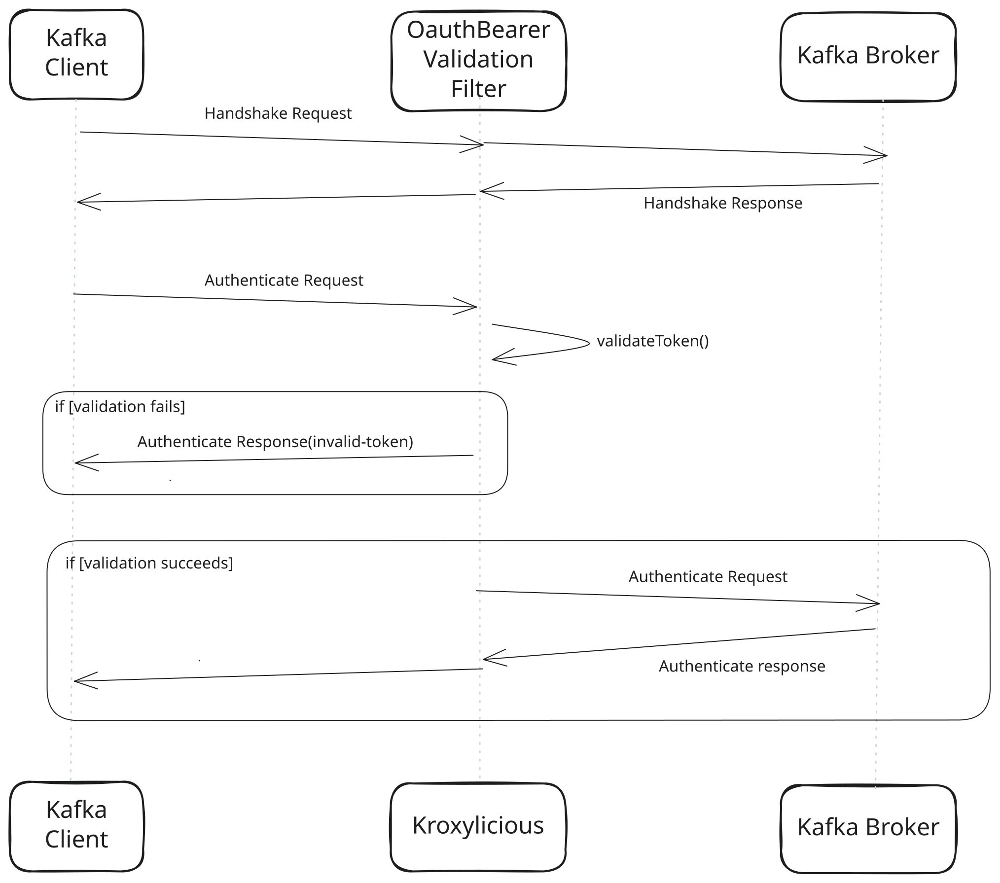

This guide covers using the Kroxylicious Oauth Bearer Validation Filter. This filter validates the JWT token received from client before forwarding it to the cluster. Refer to other Kroxylicious guides for information on running the proxy or for advanced topics such as plugin development.
OauthBearerValidation filter enables a validation on the JWT token received from client before forwarding it to cluster.
If the token is not validated, then the request is short-circuited. It reduces resource consumption on the cluster when a client sends too many invalid SASL requests.

This procedure describes how to set up the Oauth Bearer Validation filter by configuring it in Kroxylicious.
An instance of Kroxylicious. For information on deploying Kroxylicious, see the Kroxylicious Proxy guide or Kroxylicious Operator for Kubernetes guide.
Configure a OauthBearerValidation type filter.
In a standalone proxy deployment. See Example proxy configuration file
In a Kubernetes deployment using a KafkaProtocolFilter resource. See Example KafkaProtocolFilter resource
| OauthBearer configuration follows Kafka’s SSL properties. |
If your instance of the Kroxylicious Proxy runs directly on an operating system, provide the filter configuration in the filterDefinitions list of your proxy configuration.
Here’s a complete example of a filterDefinitions entry configured for Oauth Bearer validation:
filterDefinitions configuration
filterDefinitions:
- name: my-oauth-filter
type: OauthBearerValidation
config:
jwksEndpointUrl: https://oauth/JWKS
jwksEndpointRefreshMs: 3600000
jwksEndpointRetryBackoffMs: 100
jwksEndpointRetryBackoffMaxMs: 10000
scopeClaimName: scope
subClaimName: sub
authenticateBackOffMaxMs: 60000
authenticateCacheMaxSize: 1000
expectedAudience: https://first.audience, https//second.audience
expectedIssuer: https://your-domain.auth/where:
jwksEndpointUrl (Required) specifies the OAuth/OIDC provider endpoint from which the JSON Web Key Set (JWKS) is retrieved. The following properties are optional:
jwksEndpointRefreshMs specifies the interval, in milliseconds, between refreshes of the JWKS cache used to verify JWT signatures.
jwksEndpointRetryBackoffMs specifies the initial delay, in milliseconds, between attempts to retrieve the JWKS from the external authentication provider.
jwksEndpointRetryBackoffMaxMs specifies the maximum delay, in milliseconds, between JWKS retrieval attempts.
scopeClaimName specifies an alternative claim name for the scope in the JWT payload.
subClaimName specifies an alternative claim name for the subject in the JWT payload.
authenticateBackOffMaxMs specifies the maximum backoff time, in milliseconds, applied to repeated authentication attempts. A value of 0 disables backoff. Otherwise, an exponential delay is added to each authenticate request until the authenticateBackOffMaxMs has been reached.
authenticateCacheMaxSize specifies the maximum number of failed tokens retained in the cache.
expectedAudience specifies a comma-delimited list of valid audiences used to verify the JWT.
expectedIssuer specifies the expected issuer used to verify the JWT.
Refer to the Kroxylicious Proxy guide for more information about configuring the proxy.
KafkaProtocolFilter resourceIf your instance of Kroxylicious runs on Kubernetes, you must use a KafkaProtocolFilter resource to contain the filter configuration.
Here’s a complete example of a KafkaProtocolFilter resource configured for Oauth Bearer validation:
KafkaProtocolFilter resource for record validation
kind: KafkaProtocolFilter
metadata:
name: my-oauth-bearer-validation-filter
spec:
type: OauthBearerValidation
configTemplate:
jwksEndpointUrl: https://oauth/JWKS
jwksEndpointRefreshMs: 3600000
jwksEndpointRetryBackoffMs: 100
jwksEndpointRetryBackoffMaxMs: 10000
scopeClaimName: scope
subClaimName: sub
authenticateBackOffMaxMs: 60000
authenticateCacheMaxSize: 1000
expectedAudience: https://first.audience, https//second.audience
expectedIssuer: https://your-domain.auth/where:
jwksEndpointUrl (Required) specifies the OAuth/OIDC provider URL from which the provider’s JSON Web Key Set (JWKS) is retrieved. The following properties are optional:
jwksEndpointRefreshMs specifies the interval, in milliseconds, between refreshes of the JWKS cache used to verify JWT signatures.
jwksEndpointRetryBackoffMs specifies the initial delay, in milliseconds, between attempts to retrieve the JWKS from the external authentication provider.
jwksEndpointRetryBackoffMaxMs specifies the maximum delay, in milliseconds, between JWKS retrieval attempts.
scopeClaimName specifies an alternative claim name for the scope in the JWT payload.
subClaimName specifies an alternative claim name for the subject in the JWT payload.
authenticateBackOffMaxMs specifies the maximum backoff time, in milliseconds, applied to repeated authentication attempts. A value of 0 disables backoff. Otherwise, an exponential delay is added to each authenticate request until the authenticateBackOffMaxMs has been reached.
authenticateCacheMaxSize specifies the maximum number of failed tokens retained in the cache.
expectedAudience specifies a comma-delimited list of valid audiences used to verify the JWT.
expectedIssuer specifies the expected issuer used to verify the JWT.
Refer to the Kroxylicious Operator for Kubernetes guide for more information about configuration on Kubernetes.
Apache Kafka is a registered trademark of The Apache Software Foundation.
Kubernetes is a registered trademark of The Linux Foundation.
Prometheus is a registered trademark of The Linux Foundation.
Strimzi is a trademark of The Linux Foundation.
Hashicorp Vault is a registered trademark of HashiCorp, Inc.
AWS Key Management Service is a trademark of Amazon.com, Inc. or its affiliates.
Microsoft, Azure, and Microsoft Entra are trademarks of the Microsoft group of companies.
Fortanix and Data Security Manager are trademarks of Fortanix, Inc.